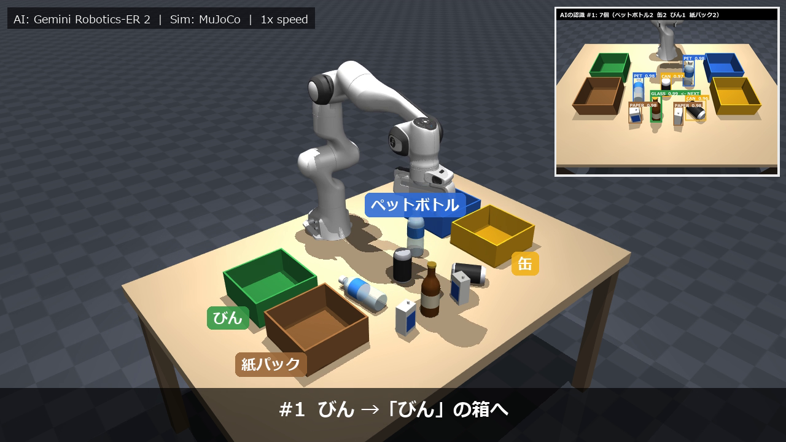
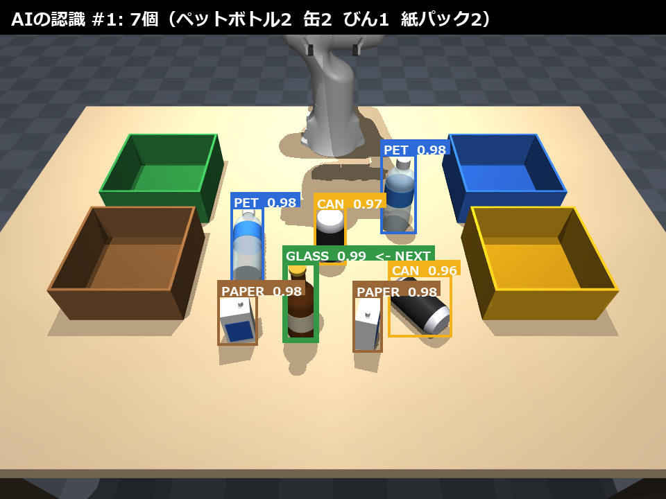

Gemini Robotics-ER 2 の画像認識と深度計測を組み合わせ、Franka Panda アームが机の上の資源ごみを 1 個ずつ分別する閉ループシステム（MuJoCo シミュレーション）
家庭から出る資源ごみは、ペットボトル・缶・びん・紙パックのように品目ごとに分けて初めて再資源化できます。本課題では、この「見て判断し、つかんで分ける」作業を AI とロボットアームで自動化しました。
ねらいは、画像を見て判断できる AI（VLM: 画像と言語を扱う大規模モデル）を推論だけで使い、その判断を 3 次元の位置推定・把持計画・動作制御までつないで、実際に物を動かすところまで閉じたシステムにすることです。講座サンプルの「Gemini Robotics-ER を試す」は画像に注釈を付けるところまで、「Pick and Place（UR3）」は決め打ちの位置をつかむところまでなので、本作はこの 2 つをつないで発展させた位置づけです。


| 要素 | 内容 |
|---|---|
| シミュレータ | MuJoCo 3.15（Python）。シーンは MjSpec でコードから構築（机・色分けした回収箱 4 つ・品目 4 種）。GPU なしのノート PC で動作。 |
| ロボット | Franka Emika Panda（7 自由度＋平行グリッパ、MuJoCo Menagerie のモデル、Apache-2.0）。 |
| AI（推論のみ） | Gemini Robotics-ER 2 Preview（Google の身体性推論 VLM、無料枠）。画像 1 枚につき 1 回呼び出し、物体ごとの枠・品目名・分別区分・確信度を JSON で受け取る。 |
| 品目 | ペットボトル（キャップ・ラベル付き）、アルミ缶、びん（茶色）、紙パック。回転体メッシュなどで形を作り、ラベル色や向き、倒れた状態を乱数で変える。 |
| 制御 | 減衰最小二乗法の逆運動学、躍度最小の滑らかな軌道、直線補間の下降・上昇。 |
シミュレータは物体の正確な位置を知っていますが、それを制御に使うと実機では成り立ちません。本作では位置・向き・高さ・倒れているかをすべてカメラ画像から推定し、シミュレータの正解値は結果の評価とログにだけ使いました。
最初は枠内の点の重心を使っていましたが、カメラからは手前側の面しか見えないため、奥行き方向に約 5 mm の偏りが出ました。ボトルのキャップ上面・缶のふた・紙パックの上面は全体がカメラから見えることに着目し、最も高い面の薄い層だけの重心を位置とする方法に変えたところ、本番の立った物 5 個で平均誤差 1.8 mm（最大 2.8 mm）になりました。同じ層の点の主軸から紙パックの向きを、高さと細長さから「倒れているか」を判定しています。
倒れた物は誤差が大きく、本番では缶 4.1 mm、ペットボトル 44.7 mm でした。ボトルは首側が細いため最も高い面の中心が軸方向にずれますが（軸と直角方向は 0.3 mm）、胴の上で挟む位置が変わるだけで把持には成功しています。7 個の平均は 8.2 mm（動画の最後に表示）。
物が重なって写ると、AI の枠どうしも重なります。手前に立つびんが紙パックの枠に大きく入り込み、「紙パック」としてびんの位置を推定してしまう失敗が評価で 1 件見つかりました。そこで、重なった部分の画素は中心がより近い枠の物体だけに割り当て、さらにAI の品目と深度で測った高さが矛盾する検出（高さ 20 cm の「紙パック」など）はその回は保留して、他の物を片付けた後の再観察に回すようにしました。
1 個入れるたびに撮り直して AI に認識させるので、取り損ねた物や途中で倒れた物も次の観察で拾い直せます。同じ場所で 2 回失敗した物は諦めて次へ進み、無限ループを防ぎます。
| 症状 | 原因 | 対策 |
|---|---|---|
| びん（190 g）だけ持ち上がらない | 標準のグリッパの握力が約 1 N しかない | サーボの剛性を上げて約 20 N に |
| 缶をつかんでも運搬中に抜ける | 小さな箱形の指パッドと円柱の接触判定で、指が缶に約 2 cm めり込んでいた | 円柱の当たり判定を多角柱メッシュ（凸包）に変更し、めり込みを約 1 mm に |
| 箱に入ったのに「失敗」と判定 | 立ったボトルの重心が壁の高さをわずかに超えていた | 判定を「重心が箱の内側で、壁の高さ＋5 cm 未満」に |
多くの配置を短時間で試すため、AI の代わりに「正解の物体をカメラ画像に投影した枠」を渡す評価モードを作りました。枠から先（深度による 3D 推定・把持・運搬）は本番とまったく同じ処理です。成功率はこのモードで測っています。
AI の応答は画像のハッシュごとに保存し、同じ場面の再実行では API を呼びません（物理演算が決定的なので、字幕を直しただけの動画なら API なしで作り直せます）。1 回の分別で呼び出すのは 8 回（7 個＋最後の確認）です。
| 条件 | 結果 |
|---|---|
| 本番（Gemini Robotics-ER 2・デモ配置 7 個、うち 2 個は倒れた状態） | 7 / 7 個を正しい箱へ。AI 呼び出し 8 回。品目判定 28 / 28 件正解（確信度 0.96〜0.99）、倒れ判定 13 / 13 件正解。位置誤差は立った物で平均 1.8 mm、全 7 個で 8.2 mm。動画 101.5 秒（1 倍速）。 |
| 評価モード・標準配置（立った 6 個 × 10 通り） | 60 / 60 個（100 %）。全配置で把持 6 回＋確認 1 回、やり直しなし。位置誤差 平均 約 2 mm。 |
| 評価モード・デモ配置（倒れた物を含む 7 個 × 10 通り） | 70 / 70 個（100 %）。倒れた物の把持 21 回はすべて成功。取り損ね 1 回は次の観察で拾い直した。 |
| 改良の段階 | 成功率 |
|---|---|
| 初版（枠内重心で位置推定、取る順はカメラに近い順） | 4 / 6 |
| 上面重心・背の高い順・倒れ対応・指の向き調整 | 27 / 30 |
| 円柱の当たり判定を凸包メッシュに（標準配置） | 60 / 60 |
| 倒れた物を含むデモ配置で評価 | 69 / 70 |
| 重なった枠の画素割り当て＋品目と高さの矛盾チェック | 70 / 70 |
AI は学習なし（推論のみ）でも、品目の判定はほぼ完璧でした。一方で、成功率を左右したのは「どこをどう挟むか」「どの順で取るか」といった把持の計画と、物理シミュレーションの細部でした。AI の判断を物理的な動作に落とし込む部分にこそ工夫の余地がある、というのが一番の学びです。
実機に持ち込む場合の課題として、次の点を考えています。